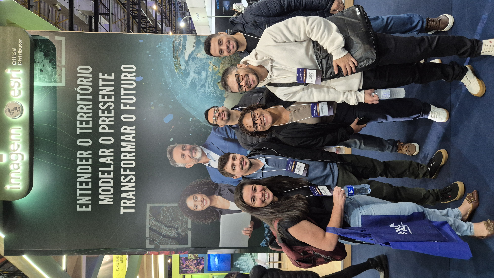
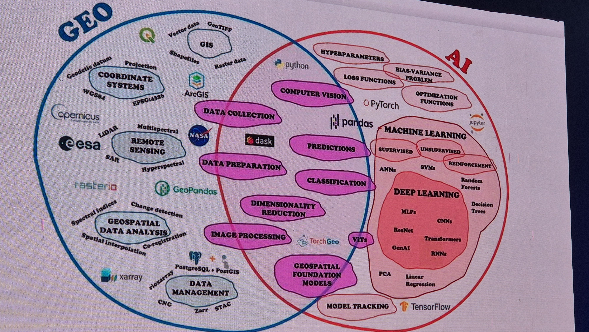
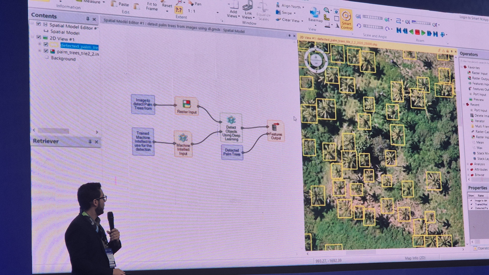
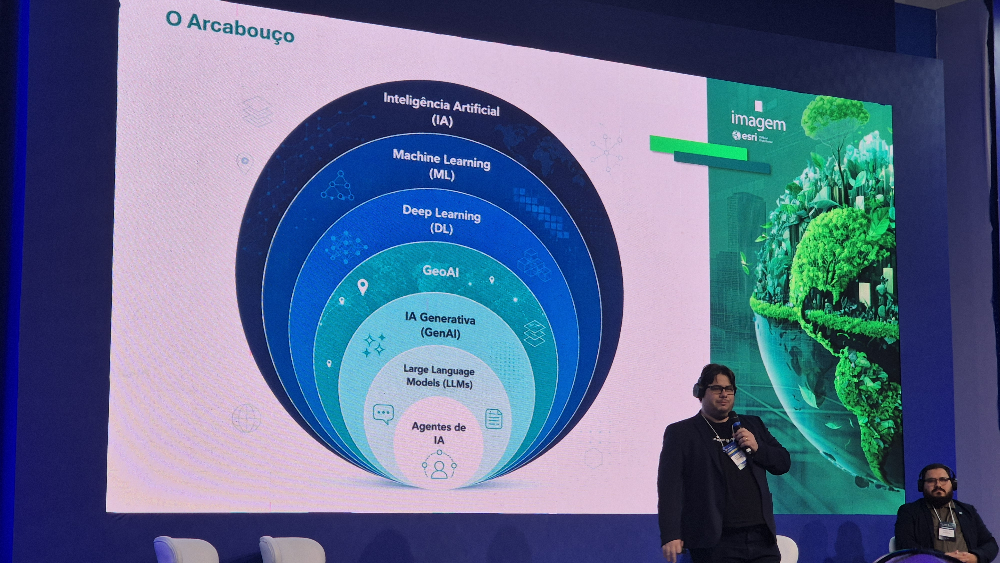
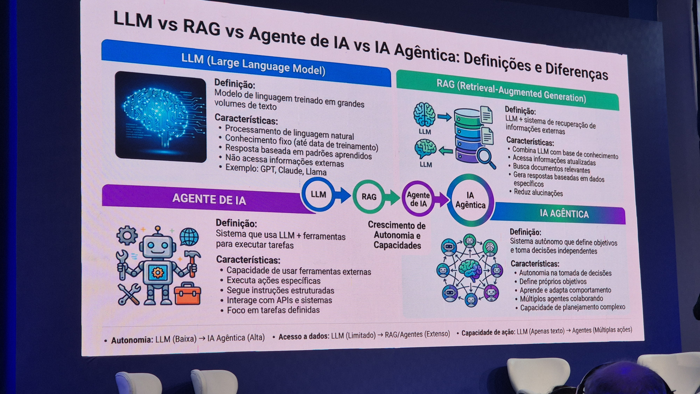
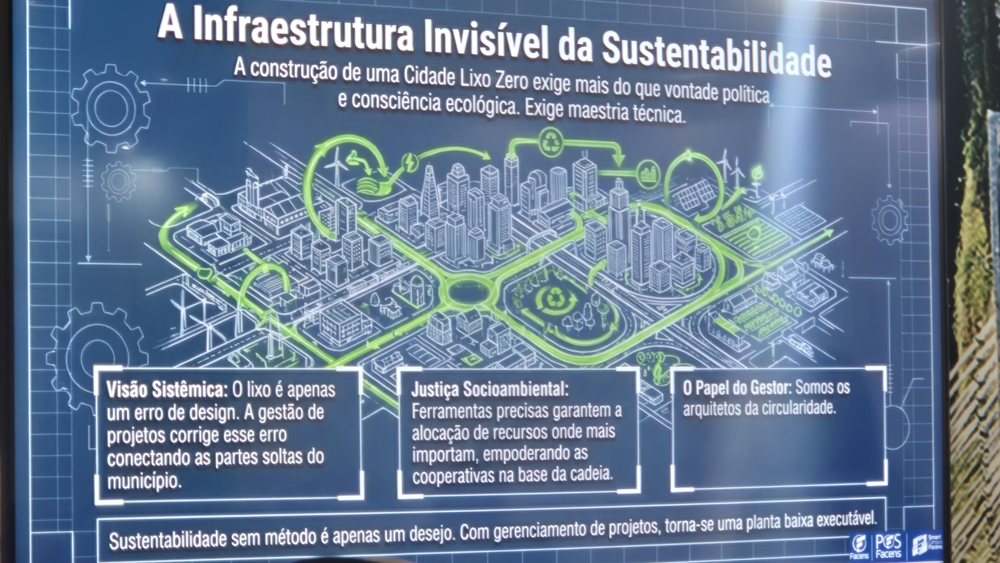
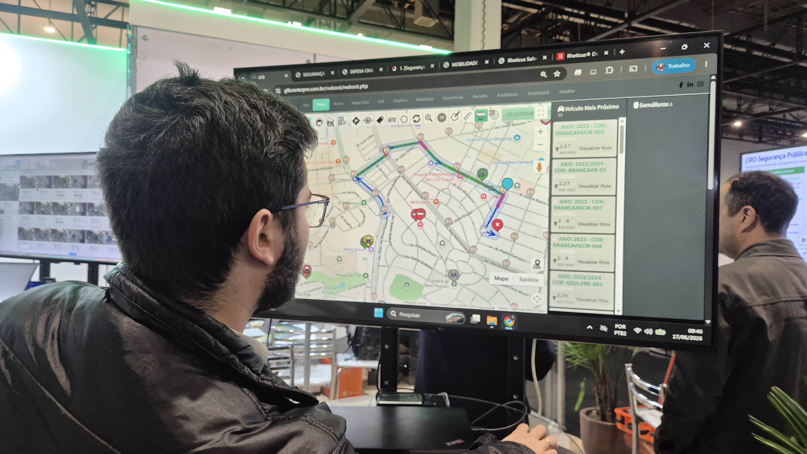

RELATÓRIO DE GEOINTELIGÊNCIA
DA COMLURB
Equipe de Participantes e Autores
A participação da COMLURB no Congresso MundoGEO Connect 2026 contou com uma equipe técnica multidisciplinar, unindo as diretorias de Serviços Urbanos, Limpeza Urbana, Gestão de Gente e Desenvolvimento. Esta combinação de habilidades permitiu capturar de forma ampla as inovações em infraestrutura espacial e sua aplicação prática no território urbano do Rio de Janeiro.
Jaqueline Nascimento
Rômulo Guimarães Giácomo
Marcelo Dantas
Alexandra Roberta da Silva
Diego de Freitas Dias Sarmanho Lopes
Felipe Xavier

Introdução e Alinhamento Estratégico
A participação da COMLURB no Congresso MundoGEO Connect 2026 teve como objetivo ampliar a compreensão institucional sobre o uso das geotecnologias, da inteligência artificial, da automação e da inteligência geográfica como instrumentos de modernização da gestão pública.
Os conteúdos acompanhados demonstraram que a tecnologia, isoladamente, não resolve os desafios urbanos. A principal mensagem extraída dos cursos e palestras é que a transformação digital depende da integração entre pessoas, processos, dados e sistemas.
A cidade contemporânea muda todos os dias, e, para administrá-la com eficiência, é necessário conhecer o território, atualizar informações continuamente e transformar dados em decisões melhores. No escopo de uma metrópole com a complexidade territorial do Rio de Janeiro, a COMLURB consolida sua atuação não apenas como executora operacional, mas como geradora de inteligência urbana diária.
"A tecnologia é o meio. A finalidade é melhorar a gestão pública, apoiar os trabalhadores, qualificar o planejamento e entregar melhores serviços à cidade."

Módulo 1: Cursos e Conhecimentos Estratégicos Adquiridos
Neste primeiro módulo, são apresentados os cursos custeados pela COMLURB, com a descrição objetiva dos conteúdos abordados e a indicação de como esse conhecimento pode ser aplicado na Companhia.
1. Curso: Automação e IA no ArcGIS
O que foi abordado no curso
O curso “Automação e IA no ArcGIS” apresentou formas de utilizar recursos de automação e inteligência artificial dentro do ambiente ArcGIS, com foco na melhoria dos fluxos de trabalho técnicos e operacionais.
O conteúdo abordou o uso de assistentes de inteligência artificial como apoio à construção de expressões e rotinas dentro do ArcGIS Pro e de aplicações web. Também foi apresentado o uso da linguagem Arcade, que permite criar regras, cálculos, validações, expressões condicionais e automatizações dentro dos mapas, formulários, painéis e relatórios.
Outro ponto relevante foi a introdução ao uso de Python e técnicas de Deep Learning para classificação de imagens. Essa abordagem permite que imagens obtidas por sensores remotos, drones ou outras fontes sejam analisadas por modelos computacionais capazes de reconhecer padrões, classificar áreas e apoiar diagnósticos territoriais.
Em síntese, o curso demonstrou que o ArcGIS pode deixar de ser apenas uma ferramenta de visualização de mapas e passar a funcionar como uma plataforma de automação de processos, análise territorial e apoio à decisão.

Como esse conhecimento pode ser utilizado na COMLURB
Na COMLURB, esse conhecimento pode ser aplicado diretamente na automação de atividades que hoje dependem de conferências manuais, planilhas paralelas ou produção repetitiva de relatórios.
A linguagem Arcade e os recursos de automação podem ser utilizados para melhorar formulários de campo, validar preenchimentos, gerar campos calculados, classificar automaticamente tipos de ocorrência, organizar painéis de acompanhamento e produzir relatórios técnicos de forma mais padronizada.
Esse aprendizado tem aplicação direta em processos como poda urbana, coleta seletiva, limpeza de escolas e unidades de saúde, apoio a eventos, manutenção de praças, controle de ordens de serviço e acompanhamento de demandas oriundas do 1746.
A inteligência artificial e o Deep Learning também podem apoiar a análise de imagens aéreas, imagens de drones ou registros fotográficos de campo, permitindo identificar padrões relacionados a vegetação, áreas com acúmulo de resíduos, alterações no território, pontos críticos de descarte irregular e locais que exigem maior atenção operacional.
Para a Companhia, o principal ganho está em reduzir retrabalho, aumentar a velocidade de resposta, melhorar a qualidade dos dados e transformar o ArcGIS em uma ferramenta ativa de gestão, e não apenas em um repositório de mapas.
Princípios de Governança Digital
Segurança, Privacidade, Transparência, Justiça, Confiabilidade e Responsabilidade. O curso destacou a importância crítica da auditabilidade algorítmica no setor público para garantir a legitimidade das decisões apoiadas por IA.
Assistentes de IA Aplicados
- Assistente Arcade: geração de expressões dinâmicas para mapas, rótulos inteligentes e simbologia adaptativa.
- Assistente Notebooks: geração automatizada de códigos Python estruturados por meio de linguagem natural.
- Survey123: criação imediata de formulários lógicos e interpretação automatizada de fotos de campo.
- StoryMaps: estruturação de narrativas territoriais interativas para relatórios executivos.
- Business Analyst: análise socioeconômica territorial de dados para dimensionamento de serviços.
- Teams: integração das camadas de visualização cartográfica no ambiente corporativo do Microsoft Teams.
- Documentação: automação na geração de metadados geográficos estruturados.
- Solutions: biblioteca integrada para descoberta rápida de soluções operacionais prontas.
Data Explorer
O conceito de Data Explorer engloba a criação automática de aplicações geográficas baseadas em dados existentes, permitindo a interação direta via linguagem natural por meio de chat de chamada única.
Aplicações potenciais na COMLURB:
- Coleta inteligente em campo por meio do Survey123 integrado a formulários de vistoria.
- Automação de rotinas com Notebooks Python integrando bancos de dados de gerências operacionais.
- Exploração imediata e sem código de dados históricos do sistema SICO por parte de gestores de ponta.
- Estruturação de Dashboards de acompanhamento operacional e StoryMaps para consolidação de relatórios executivos de eventos.
- Qualificação do planejamento territorial e locação de equipes baseados em métricas espaciais consolidadas.
2. Curso: GIS e Inteligência Artificial
O que foi abordado no curso
O curso “GIS e Inteligência Artificial” apresentou a relação entre os Sistemas de Informação Geográfica e os diferentes níveis de inteligência artificial aplicados ao território.
Foi possível observar uma introdução conceitual sobre inteligência artificial, machine learning, deep learning, redes neurais e inteligência artificial generativa. O curso mostrou que a inteligência artificial não é uma tecnologia única, mas um conjunto de métodos capazes de aprender padrões a partir de dados.
Também foi demonstrado que o desempenho dos modelos de inteligência artificial depende diretamente da quantidade, da qualidade e da organização dos dados disponíveis. Em outras palavras, quanto melhor estruturada for a base de informações, maior será a capacidade da tecnologia de produzir análises confiáveis.
Os exemplos apresentados envolveram aplicações de machine learning em estudos ambientais e territoriais, como mapeamento de áreas de risco de deslizamento em São Sebastião, classificação de áreas úmidas no Rio Grande do Sul e análise de imagens e variáveis geográficas para identificação de padrões.
O curso reforçou uma ideia central: a inteligência artificial só gera bons resultados quando está apoiada em dados consistentes, bem georreferenciados e corretamente interpretados por equipes capacitadas.

Como esse conhecimento pode ser utilizado na COMLURB
Na COMLURB, o uso combinado de GIS e inteligência artificial pode apoiar uma mudança importante: sair de uma gestão predominantemente reativa para uma gestão mais preventiva e estratégica.
Com bases históricas de atendimento, registros do 1746, ordens de serviço, dados de campo, imagens, rotas operacionais e informações territoriais, a Companhia poderá desenvolver análises para identificar padrões de ocorrência, prever áreas de maior demanda e orientar melhor a distribuição de equipes e recursos.
Esse conhecimento pode ser aplicado, por exemplo, na identificação de locais com maior recorrência de descarte irregular, na previsão de aumento de resíduos em determinadas épocas, no apoio ao planejamento da limpeza urbana em eventos, na análise de áreas com maior necessidade de poda, na priorização de serviços por criticidade e na definição de rotas mais eficientes.
A inteligência artificial também pode apoiar a leitura de imagens e fotografias, classificando situações operacionais, reconhecendo elementos urbanos e auxiliando na organização de evidências para relatórios técnicos.
O principal aprendizado para a COMLURB é que a inteligência artificial não substitui o conhecimento operacional dos empregados. Ao contrário, ela depende desse conhecimento para interpretar corretamente o território. A tecnologia deve ser vista como uma ferramenta de apoio, capaz de ampliar a capacidade de análise da Companhia e tornar as decisões mais rápidas, precisas e baseadas em evidências.
3. Curso: Inteligência Geográfica nos Municípios
O que foi abordado no curso
O curso “Inteligência Geográfica nos Municípios” trouxe uma visão ampla sobre o papel da informação territorial na administração pública. A mensagem central apresentada foi que toda decisão pública acontece em algum lugar. Escolas, unidades de saúde, equipamentos públicos, atividades econômicas, áreas residenciais, infraestrutura urbana e serviços municipais estão todos localizados no território.
Quando os dados começam a se conectar, surge a inteligência geográfica. Essa inteligência nasce da integração entre cadastro, cartografia, planejamento urbano, mercado imobiliário, informações tributárias, infraestrutura urbana e dados ambientais.
Foram apresentados exemplos de municípios que utilizam a informação territorial como infraestrutura estratégica de governo, com destaque para experiências de Belo Horizonte e Fortaleza.
No caso de Belo Horizonte, foi apresentado o Cadastro Territorial Multifinalitário, a construção de uma Base de Dados Geográfica única, o papel da IDE-BHGEO, o SisCTM, o SIURBE e a integração de diferentes órgãos municipais em torno de uma visão única do território. A palestra mostrou que o maior desafio não é tecnológico, mas institucional: integrar pessoas, processos e dados.
Também foi destacada a experiência de Fortaleza, com uma trajetória de evolução da informação territorial à inteligência geográfica. O percurso apresentado passou por etapas como conhecer, mapear, integrar, conectar e decidir. Essa lógica demonstra que os municípios precisam primeiro estruturar sua base de dados para, depois, avançar em inteligência artificial, GeoBIM, gêmeos digitais e modelos mais sofisticados de tomada de decisão.
O cadastro deixou de ser apenas um instrumento ligado à arrecadação. Ele passou a ser compreendido como uma infraestrutura estratégica de governo, capaz de apoiar habitação, mobilidade urbana, regularização fundiária, defesa civil, meio ambiente, planejamento territorial, Limpeza Urbana, tributação e integração de dados.
Como esse conhecimento pode ser utilizado na COMLURB
Para a COMLURB, esse curso tem aplicação direta na construção de uma visão integrada do território operacional da limpeza urbana.
A Companhia atua diariamente em toda a cidade: ruas, praças, escolas, unidades de saúde, áreas de lazer, comunidades, grandes eventos, praias, parques, logradouros e áreas de descarte irregular. Cada serviço executado ocorre em um ponto do território e produz uma informação que pode ser utilizada para melhorar o planejamento.
A inteligência geográfica pode apoiar a COMLURB na criação de uma base única e confiável de informações operacionais, reunindo dados de coleta, varrição, poda, coleta seletiva, remoção, limpeza hospitalar, limpeza escolar, eventos, praças, equipamentos urbanos e atendimento ao cidadão.
Esse conhecimento também reforça a necessidade de integração com bases municipais já existentes, como logradouros, bairros, áreas de planejamento, equipamentos públicos, dados do 1746, bases do IPP, SIURB, sistemas internos e demais informações produzidas pela Prefeitura.
A aplicação prática está em permitir que a COMLURB enxergue a cidade de forma mais precisa, evitando decisões baseadas apenas em percepção ou demanda isolada. Com inteligência geográfica, será possível identificar onde estão os maiores problemas, quais áreas demandam mais recursos, onde há repetição de ocorrências, onde a operação precisa ser reforçada e quais serviços podem ser planejados de forma integrada.
O aprendizado mais importante é que a cidade não pode ser administrada por bases fragmentadas. Para uma empresa como a COMLURB, que atua diretamente no território, a informação geográfica integrada é uma condição para melhorar a eficiência operacional, a transparência, o planejamento e a qualidade dos serviços prestados à população.
4. Curso: Informação Geográfica e Inteligência Artificial
O que foi abordado no curso
O curso “Informação Geográfica e Inteligência Artificial” aprofundou a relação entre dados territoriais, modelos computacionais e apoio à tomada de decisão.
O material destacou o papel das geotecnologias no tratamento de imagens, mapas, variáveis ambientais, bases territoriais e informações espaciais. Foram apresentados exemplos de uso de inteligência artificial para classificação de áreas, identificação de padrões e produção de diagnósticos sobre o território.
O curso também apresentou a importância dos dados de entrada para os modelos de inteligência artificial. Nas lâminas sobre redes neurais, foi possível observar a lógica de funcionamento com camadas de entrada, camadas ocultas e camadas de saída. Essa estrutura demonstra que a inteligência artificial processa diferentes variáveis e procura padrões que possam gerar uma resposta ou classificação.
Outro ponto destacado foi a evolução da inteligência artificial, do machine learning e do deep learning ao longo do tempo. O material mostrou que os métodos mais recentes têm maior capacidade de desempenho quando alimentados por grandes volumes de dados.
A palestra também abordou aplicações práticas em geotecnologias, como análise de imagens, mapeamento de riscos, classificação de áreas, reconhecimento de padrões ambientais e apoio ao planejamento urbano.
A principal mensagem é que a inteligência artificial aplicada à informação geográfica permite transformar grandes quantidades de dados espaciais em conhecimento útil para a gestão pública.
Como esse conhecimento pode ser utilizado na COMLURB
Na COMLURB, a informação geográfica combinada com inteligência artificial pode apoiar a transformação dos dados operacionais em conhecimento estratégico.
A Companhia possui grande potencial de produção de dados territoriais: registros de equipes, roteiros, ordens de serviço, demandas do cidadão, imagens de campo, localização de pontos críticos, serviços executados, áreas atendidas, periodicidade operacional e indicadores de produtividade.
With esse conhecimento, a COMLURB poderá avançar na criação de modelos de análise capazes de indicar prioridades, identificar padrões e auxiliar na previsão de demandas. Isso pode apoiar o planejamento de serviços como coleta seletiva, poda urbana, limpeza de praias, remoção de resíduos, manutenção de praças, limpeza de escolas e unidades de saúde, além do planejamento de grandes eventos.
A inteligência artificial também pode auxiliar na classificação de imagens de campo, permitindo reconhecer situações como acúmulo de resíduos, presença de vegetação, obstruções, necessidade de limpeza, descarte irregular ou alterações no espaço urbano.
No entanto, o curso reforça um cuidado essencial: a inteligência artificial não deve ser usada sobre bases desorganizadas ou inconsistentes. Antes de avançar para modelos mais sofisticados, é necessário estruturar os dados, padronizar informações, garantir qualidade, definir regras de governança e integrar sistemas.
Para a COMLURB, esse curso evidencia que o caminho da inovação passa por uma sequência lógica: primeiro organizar os dados, capacitar as pessoas, depois integrar os sistemas, em seguida automatizar processos e, por fim, aplicar inteligência artificial para apoiar decisões mais qualificadas.
Síntese do Módulo 1
Os quatro cursos convergem para uma mesma conclusão: a COMLURB tem a oportunidade de transformar sua grande capacidade operacional em uma gestão cada vez mais orientada por dados e preditiva, com capacidade de se antecipar aos fatos.
A Companhia já possui conhecimento de território, presença diária nas ruas, equipes distribuídas pela cidade e grande volume de informações produzidas em campo. O desafio é organizar esse conhecimento em bases geográficas integradas, confiáveis e atualizadas.
Módulo 2: Palestras Livres e Painéis Técnicos
Além dos cursos técnicos realizados pela equipe da COMLURB, a participação no Congresso MundoGEO Connect 2026 possibilitou o acompanhamento de palestras e painéis voltados à aplicação prática das geotecnologias na gestão pública.
Essas apresentações trouxeram experiências de diferentes cidades, instituições e especialistas, demonstrando que a modernização da gestão urbana não depende apenas da aquisição de ferramentas tecnológicas. O ponto central apresentado foi a necessidade de estruturar dados, integrar sistemas, capacitar pessoas, criar governança e transformar a informação territorial em inteligência para a tomada de decisão.
1. Palestra: O Paradoxo Brasileiro e a Hierarquia de Adoção Tecnológica Urbana
A palestra apresentou uma análise comparativa sobre o estágio de maturidade das cidades brasileiras em relação à adoção de tecnologias urbanas, como Dados Abertos, WebGIS, Cadastro Territorial Multifinalitário, Infraestrutura de Dados Espaciais, BIM, CIM, Gêmeos Digitais Urbanos e Citiverse.
O palestrante demonstrou que existe, no Brasil, uma inversão na ordem tradicional de adoção tecnológica. Enquanto cidades consideradas referência internacional tendem a consolidar primeiro dados abertos e infraestrutura de dados para depois avançar em WebGIS, BIM, CIM e gêmeos digitais, muitas cidades brasileiras desenvolveram plataformas de visualização antes de estruturarem plenamente suas bases de dados.
Essa inversão foi chamada de “paradoxo brasileiro”. A análise indicou que o Brasil não está apenas atrasado em relação às cidades mais avançadas do mundo; em muitos casos, está seguindo uma trajetória diferente, com forte desenvolvimento de visualização, mas ainda com fragilidades na consolidação da infraestrutura de dados.
A palestra apresentou exemplos de cidades de referência, como Singapura, Nova York e São Paulo. Singapura foi destacada pelo alto nível de maturidade em dados abertos, APIs, integração institucional e uso de informações para políticas urbanas. Nova York foi apresentada como referência em dados abertos e transparência, com milhares de bases públicas e forte cultura de disponibilização de informações. São Paulo foi mencionada como referência brasileira em WebGIS, especialmente por meio do GeoSampa, que reúne centenas de camadas e se tornou uma plataforma importante para outras capitais.
2. Painel: Consulta a Especialistas Brasileiros sobre GeoBIM, Gêmeos Digitais e CIM
Outro bloco apresentado tratou de uma consulta realizada a especialistas brasileiros, utilizando metodologia inspirada no método Delphi. A dinâmica envolveu especialistas de diferentes áreas — universo acadêmico, tecnológico e de gestão pública — para avaliar os impactos futuros da incorporação de novas tecnologias de análise espacial no planejamento urbano.
O painel buscou compreender quais seriam os principais impactos, nos próximos cinco a dez anos, da adoção de tecnologias como GeoBIM, Gêmeos Digitais e CIM. Entre os impactos mais apontados apareceram a melhoria da eficiência processual, a governança e integração de dados, a inclusão e o acesso tecnológico, os desafios de capacitação e recursos humanos, além da sustentabilidade e dos impactos ambientais.
Também foi discutida a possibilidade de desenvolver sinergia entre novas tecnologias e os instrumentos legais que orientam as políticas públicas urbanas. Nesse ponto, ganharam destaque a integração e interoperabilidade, a otimização de processos, a gestão pública, a participação social, a inovação institucional e a qualidade ambiental e urbana.
3. Palestra: Cadastro Territorial Multifinalitário de Belo Horizonte — Concepção e Utilização
A palestra sobre Belo Horizonte apresentou a experiência da Prefeitura de Belo Horizonte na construção e utilização do Cadastro Territorial Multifinalitário. O conteúdo mostrou que a cidade desenvolveu, ao longo de mais de três décadas, uma trajetória de uso de geotecnologias aplicada à gestão municipal.
A apresentação explicou que Belo Horizonte avançou em fases: primeiro com a consolidação do uso de SIG, depois com a disseminação do SIG desktop, em seguida com a estruturação de uma base corporativa de dados geográficos e, posteriormente, com a criação de uma Infraestrutura de Dados Espaciais municipal.
Foi apresentada a importância de uma base geográfica única como ativo estratégico para a gestão pública. Essa base permite que diferentes órgãos municipais trabalhem sobre uma mesma referência territorial, reduzindo duplicidade de informações, melhorando a segurança dos dados, diminuindo divergências e aumentando a confiabilidade das análises.
A palestra também abordou a diferença entre várias dimensões da cidade: a cidade aprovada, baseada em plantas de parcelamento do solo; a cidade real, baseada na ocupação de fato; a cidade cartorial, baseada em matrículas e registros de imóveis; e a cidade tributária, baseada na existência de inscrição municipal. Essa distinção é fundamental para compreender que o território administrativo nem sempre coincide perfeitamente com o território real ocupado pela população.
4. Palestra: Inteligência Geográfica e a Gestão Municipal
A palestra sobre inteligência geográfica na gestão municipal partiu de uma ideia simples e poderosa: toda decisão pública acontece em algum lugar.
A apresentação mostrou que, quando os dados começam a se conectar, surge a inteligência geográfica. O cadastro deixou de ser apenas um instrumento ligado à arrecadação fiscal, passando a ser entendido como infraestrutura estratégica de governo, capaz de apoiar habitação, mobilidade urbana, regularização fundiária, defesa civil, meio ambiente, planejamento territorial, tributação e integração de dados.
A apresentação também trouxe a experiência de Fortaleza, mostrando a evolução da informação territorial até a inteligência geográfica. A trajetória foi organizada em etapas: conhecer, mapear, integrar, conectar e decidir. Essa sequência demonstrou que a inteligência geográfica não surge de forma imediata. Ela é resultado de um processo contínuo de construção institucional.

5. Palestra: Ganhos e Desafios na Implementação de Projetos de Inteligência Geográfica e Gêmeos Digitais nos Municípios
A palestra conduzida por representante da Topocart abordou a implementação de projetos de inteligência geográfica e gêmeos digitais em municípios. O conteúdo apresentou experiências em mapeamentos cartográficos multifinalitários, cadastro tributário, plantas genéricas de valores, sistemas de informação geográfica e aplicações em diferentes municípios.
Foi explicado o conceito de georreferenciamento cadastral territorial, entendido como a definição da forma, dimensão e localização de uma parcela territorial, com precisão posicional e referência ao Sistema Geodésico Brasileiro. Esse ponto foi apresentado como base fundamental para qualquer projeto confiável de cadastro e inteligência territorial.
A palestra mostrou que a construção de inteligência geográfica depende de uma cartografia confiável e de um cadastro estruturado. Sem essa base, os projetos mais avançados perdem consistência. Também foram apresentados recursos tecnológicos como drones, aeronaves, sensores, câmeras, imageamento, modelagem tridimensional, levantamento de logradouros, inventário urbano e leitura de elementos do território.
6. Palestra: Informação Territorial, Fragmentação Cadastral e Inteligência Geográfica nos Municípios
Outro bloco abordou os desafios enfrentados pelos municípios na organização de cadastros, mapas, processos, bases de dados e sistemas corporativos. A apresentação mostrou a existência de áreas cadastradas e áreas não cadastradas, evidenciando como a fragmentação cadastral territorial dificulta o planejamento, a gestão e a oferta de políticas públicas.
O conteúdo destacou que a cidade real nem sempre está completamente representada nas bases oficiais. Essa lacuna compromete a capacidade do poder público de compreender o território, planejar serviços, organizar recursos e responder às necessidades da população.
7. Palestra: Experiências de Uso de Geotecnologias em Aplicações Municipais
Também foi apresentado um conjunto de aplicações práticas de geotecnologias voltadas ao cotidiano da gestão municipal. Os slides demonstraram usos relacionados a planejamento operacional, segurança, tráfego, mobilidade, limpeza urbana, rotas de blocos de Carnaval, infraestrutura urbana, zoneamento, cadastro imobiliário e apoio à arrecadação.
Um dos exemplos apresentados envolveu o planejamento de eventos, com destaque para o Carnaval, contemplando planejamento de segurança, rotas de blocos, planejamento de tráfego e mobilidade e planejamento de limpeza das ruas. Esse exemplo demonstrou como o uso de mapas e dados territoriais permite organizar melhor operações complexas que envolvem grande público, deslocamentos, interdições, resíduos e necessidade de resposta rápida.
8. Palestra: Inteligência Artificial Aplicada à Informação Geográfica e às Geotecnologias
Embora a inteligência artificial também tenha sido tratada nos cursos técnicos, houve palestras e apresentações complementares sobre o contexto das geotecnologias e o uso de modelos de IA em análises territoriais.
Os slides mostraram exemplos de pesquisas com inteligência artificial aplicadas ao mapeamento de áreas de risco, classificação de áreas úmidas, análise de imagens e identificação de padrões ambientais e territoriais. Foram citados estudos envolvendo universidades e centros de pesquisa, com uso de machine learning para mapear áreas suscetíveis a deslizamentos e apoiar a gestão de riscos.
9. Palestra Livre: Inovação na Gestão de Resíduos Sólidos — Modelos, Tecnologias e Caminhos para a Implementação da Política Nacional
A palestra abordou um tema diretamente relacionado à atividade-fim da COMLURB: a gestão de resíduos sólidos urbanos. O debate tratou da necessidade de modernizar a forma como os municípios planejam, executam, monitoram e avaliam os serviços de limpeza urbana, coleta, tratamento, destinação final e integração com cadeias associadas à economia circular.
O conteúdo discutiu a inovação na gestão de resíduos sob três dimensões principais: modelos operacionais, uso de tecnologias e regulação pública. A palestra destacou que os municípios precisam superar uma visão limitada da coleta como simples retirada de resíduos das ruas. A gestão moderna exige planejamento territorial, rastreabilidade, indicadores, integração de dados, controle operacional e alinhamento com as diretrizes da Política Nacional de Resíduos Sólidos e do Plano Nacional de Resíduos Sólidos.

10. Palestra Livre: Transformação da Máquina Pública — Como redesenhar processos, estruturas e cultura para viabilizar cidades inteligentes
Essa palestra tratou da transformação institucional necessária para que a tecnologia produza resultados concretos na gestão pública. O eixo central foi a ideia de que cidades inteligentes não nascem apenas da implantação de sistemas, painéis, aplicativos ou sensores. Elas dependem de mudanças nos processos administrativos, na estrutura organizacional e na cultura de trabalho dos órgãos públicos.
O conteúdo reforçou que a tecnologia, isoladamente, não resolve problemas estruturais. Para que uma cidade avance, é necessário redesenhar fluxos internos, eliminar duplicidades, integrar áreas, definir responsabilidades, estabelecer governança de dados e criar rotinas de acompanhamento. A inovação precisa estar conectada à gestão real, aos servidores, aos processos de trabalho e às necessidades da população.
11. Palestra Livre: Iniciativas para otimizar a produção de Geoinformação com uso de IA no Serviço Geográfico
A palestra apresentou iniciativas voltadas ao uso de inteligência artificial para ampliar a produção, análise e qualificação da geoinformação. O tema dialoga diretamente com os desafios atuais dos órgãos públicos, que precisam lidar com grande volume de dados espaciais, imagens, mapas, bases cadastrais e informações territoriais em constante atualização.
O conteúdo demonstrou que a inteligência artificial pode apoiar a identificação de padrões, a classificação de imagens, a interpretação de dados espaciais, a detecção de mudanças no território e a produção mais rápida de informações geográficas qualificadas.
Síntese do Módulo 2
Os temas apresentados convergiram para uma mesma conclusão: a cidade precisa ser compreendida por meio de dados territoriais confiáveis, integrados e atualizados. A inovação não está apenas no uso de drones, inteligência artificial, WebGIS, gêmeos digitais ou painéis de controle. A inovação está em transformar essas ferramentas em capacidade real de gestão.
A COMLURB possui uma vantagem estratégica: seus serviços acontecem diariamente em todo o território da cidade. Isso significa que a Companhia não apenas executa políticas públicas; ela também observa, registra e conhece a cidade em movimento. Quando essas informações são organizadas, integradas e analisadas, deixam de ser apenas dados operacionais e passam a formar uma base de inteligência urbana.
Módulo 3: Contatos Estratégicos Realizados no MundoGEO Connect
Um congresso técnico não se mede apenas pela quantidade de palestras assistidas ou pelos cursos realizados. Mede-se, também, pela capacidade de transformar presença institucional em relacionamento, relacionamento em aprendizado e aprendizado em oportunidade concreta para a organização.
No MundoGEO Connect, a COMLURB não esteve apenas como espectadora. A participação permitiu contato direto com profissionais, empresas, especialistas, gestores públicos, pesquisadores e desenvolvedores que atuam na fronteira entre geotecnologia, inteligência artificial, cadastro territorial, cidades inteligentes, drones, sensores, sistemas corporativos e gestão urbana.
1. Contato com especialistas em cidades inteligentes, maturidade digital e estruturação de dados urbanos
Um dos contatos mais relevantes foi estabelecido a partir das discussões conduzidas por especialistas que trataram da maturidade tecnológica das cidades, do uso de WebGIS, dados abertos, IDE, CTM, BIM, CIM, gêmeos digitais e inteligência geográfica.
A mensagem central desse bloco foi simples, mas profunda: a cidade inteligente não começa pela tecnologia mais sofisticada. Ela começa pela organização da informação.
Foi apresentado o chamado “paradoxo brasileiro”, no qual muitas cidades brasileiras avançaram em plataformas de visualização, como WebGIS, antes de consolidarem plenamente suas infraestruturas de dados, seus cadastros, suas bases territoriais e seus modelos de governança. Esse contato é importante para a COMLURB porque a Companhia vive exatamente esse momento de transição. Já existem dados, sistemas, levantamentos, relatórios, registros de campo, bases de serviços, informações de equipes, roteiros, ordens de serviço e indicadores operacionais. O desafio não é apenas produzir mais dados, mas organizar os dados existentes em uma estrutura confiável, integrada e útil para a tomada de decisão.
2. Contato com Júlio Ribeiro — FF Solutions / Symetri LATAM
Entre os contatos registrados, destaca-se o de Júlio Ribeiro, profissional ligado à área de transformação digital, planejamento urbano, tecnologias aplicadas à cidade e soluções voltadas à modelagem, dados urbanos e integração tecnológica. Sua apresentação trouxe uma frase que sintetiza o espírito de todo o Congresso:
“A cidade do presente não se improvisa, ela se mede, se planeja e se constrói sobre dados.”
Para a COMLURB, ela significa que a limpeza urbana moderna não pode depender apenas da experiência empírica, da memória das equipes ou da reação a demandas pontuais. A experiência de campo continua sendo indispensável, mas precisa ser fortalecida por dados organizados, mapas, indicadores, séries históricas e ferramentas de análise.
3. Contato com representantes da PRODABEL e da Prefeitura de Belo Horizonte — Cadastro Territorial Multifinalitário
Outro contato de grande relevância foi com a experiência de Belo Horizonte, apresentada por Karla Albuquerque de Vasconcelos Borges, da PRODABEL/PBH, sobre o Cadastro Territorial Multifinalitário de Belo Horizonte.
A apresentação mostrou uma trajetória longa e madura de estruturação da informação territorial. Belo Horizonte demonstrou que uma base geográfica única não nasce pronta. Ela é construída ao longo do tempo, com diagnóstico, governança, definição de padrões, integração entre órgãos, regras de atualização, banco de dados geográficos, geosserviços, portal de informações e sistemas consumidores.
O ponto mais forte da experiência de Belo Horizonte foi a defesa de uma visão única do território municipal. A cidade foi apresentada a partir de diferentes camadas: cidade aprovada, cidade real, cidade cartorial e cidade tributária. Essa distinção é extremamente importante para a gestão pública, porque mostra que o território oficial nem sempre corresponde ao território vivido, ocupado, registrado ou tributado.
4. Contato com Fernanda Farias — Inteligência Geográfica e Gestão Municipal
Outro bloco de contatos foi associado à palestra sobre inteligência geográfica e gestão municipal, conduzida por Fernanda Farias. A abordagem foi especialmente didática e dialogou diretamente com a realidade dos municípios brasileiros.
A palestra partiu de uma ideia muito simples: toda decisão pública acontece em algum lugar. Quando os dados começam a conversar, surge a inteligência geográfica. Isso significa conectar cadastro, cartografia, planejamento urbano, infraestrutura, informações ambientais, mercado imobiliário, informações tributárias e dados operacionais. A partir dessa conexão, o município deixa de enxergar problemas isolados e passa a compreender padrões.
5. Contato com Givanildo José Silva — Topocart
Também foi estabelecido contato com Givanildo José Silva, engenheiro agrimensor e diretor técnico da Topocart, empresa com experiência em mapeamentos cartográficos multifinalitários, cadastro tributário, PGV, SIG, projetos em municípios brasileiros e de inteligência geográfica com drones e gêmeos digitais.
A apresentação abordou ganhos e desafios na implementação de projetos de inteligência geográfica e gêmeos digitais nos municípios. O conteúdo deixou claro que não existe inteligência geográfica sem base cartográfica confiável, cadastro estruturado, escolha adequada de plataformas tecnológicas e capacitação de pessoal.
6. Contato com especialistas em Inteligência Artificial aplicada à Geotecnologia
Outro grupo de contatos foi formado a partir das palestras sobre inteligência artificial aplicada à geotecnologia. Os conteúdos apresentados abordaram machine learning, deep learning, redes neurais, modelos de classificação, análise de imagens, sensoriamento remoto, identificação de padrões territoriais e uso de IA para apoio à tomada de decisão.
7. Contato com Helton Uchoa — Prefeitura Eficiente
A palestra de Helton Uchoa, associada à iniciativa Prefeitura Eficiente, trouxe um estudo de caso sobre inteligência geográfica nos municípios e uso de inteligência artificial em fiscalização de obras urbanas de pavimentação.
O caso apresentado envolveu um desafio do Tribunal de Contas da União relacionado à fiscalização de obras de pequeno porte. A solução combinou robôs, inteligência artificial, documentos públicos, extração de dados, revisão humana, coleta externa e análise especializada. O ponto mais importante foi a clareza metodológica: a expectativa era que a IA pudesse permear todas as etapas, mas a realidade mostrou que ela atua melhor quando aplicada a tarefas específicas, bem definidas e integradas a um processo com participação humana.
8. Contato com desenvolvedores e soluções voltadas à comunicação com o cidadão — aplicativo Lixo Hora Certa e Sico
Entre os contatos realizados, também se destaca a aproximação com soluções voltadas à comunicação direta com o cidadão, especialmente relacionadas ao aplicativo Lixo Hora Certa e ao Sico.
A ideia de um aplicativo ou solução digital voltada ao horário correto da coleta dialoga diretamente com a missão da COMLURB. A Companhia já possui conhecimento técnico sobre roteiros, frequência, áreas atendidas, tipos de coleta e especificidades territoriais. O desafio é transformar esse conhecimento em informação simples, acessível e útil para o cidadão.

9. Valor institucional dos contatos realizados
Os contatos feitos no MundoGEO Connect demonstram que a COMLURB está diante de uma oportunidade concreta: aproximar sua experiência operacional de soluções modernas de inteligência geográfica, automação, inteligência artificial, cadastro territorial, comunicação digital e governança de dados.
Essas aproximações não significam contratação imediata, nem substituem os processos formais da administração pública. Seu valor está, primeiro, no aprendizado. Ao conversar com especialistas, empresas e órgãos que já implantaram soluções semelhantes, a COMLURB ganha repertório para planejar melhor suas próprias iniciativas, evitar erros comuns, identificar caminhos viáveis e amadurecer suas demandas técnicas.
10. Como esses contatos podem se transformar em próximos passos para a COMLURB
A partir dos contatos realizados, recomenda-se que a COMLURB organize uma agenda interna de avaliação técnica, com o objetivo de transformar o conhecimento adquirido em ações concretas e graduais.
Os possíveis próximos passos são:
- Reunir as áreas técnicas interessadas para apresentar os principais contatos e soluções observadas.
- Classificar os contatos por tema: inteligência geográfica, cadastro territorial, IA, drones, gêmeos digitais, resíduos sólidos, comunicação com o cidadão e integração de sistemas.
- Identificar quais soluções dialogam com projetos já em andamento na COMLURB, como poda urbana, coleta seletiva, manutenção de praças, ordens de serviço digitais, integração com SIURB, Sico e painéis operacionais.
- Selecionar temas para projetos-piloto de baixo custo e alto potencial de aprendizado.
- Avaliar a possibilidade de reuniões técnicas sem compromisso comercial, apenas para aprofundamento conceitual e demonstração de soluções.
- Construir uma matriz de oportunidades, indicando o problema da COMLURB, a possível solução, o contato relacionado, a área responsável, o grau de maturidade e próximos encaminhamentos.
- Garantir que qualquer avanço respeite os trâmites administrativos, jurídicos, orçamentários e de governança da Companhia.
Síntese do Módulo 3
O principal ganho dos contatos realizados no MundoGEO Connect foi ampliar a visão da COMLURB sobre o que é possível construir quando conhecimento operacional, dados territoriais e tecnologia caminham juntos. Os contatos com especialistas, empresas e gestores públicos mostraram que a modernização da limpeza urbana depende do alinhamento entre dados e processos.
Módulo 4: Portfólio de Oportunidades e Projetos
Participar de um congresso como o MundoGEO Connect não deve ser entendido apenas como uma agenda de capacitação. Quando a instituição envia servidores para conhecer novas tecnologias, ela cria uma oportunidade rara: olhar para dentro da própria organização com novas lentes.
A COMLURB já possui muitos dados, muitos sistemas, muito conhecimento de campo e muitos projetos iniciados ou desejados ao longo dos anos. Alguns avançaram. Outros ficaram parcialmente estruturados. Outros ainda permanecem como boas ideias aguardando momento, ferramenta, integração ou prioridade institucional.
O valor deste módulo está exatamente nesse ponto: transformar o conhecimento adquirido no Congresso em uma leitura estratégica das oportunidades da Companhia.
1. Oportunidade central: transformar a COMLURB em uma empresa orientada por inteligência territorial
A COMLURB é, por natureza, uma empresa territorial. Seus serviços acontecem no espaço urbano: ruas, praças, praias, comunidades, escolas, hospitais, áreas comerciais, vias expressas, áreas turísticas, áreas de lazer, grandes eventos e pontos críticos de descarte irregular.
Cada serviço realizado pela Companhia possui uma localização. Cada roteiro tem um traçado. Cada equipe atua em uma área. Cada chamado do cidadão aponta para um problema em algum lugar. Cada ponto de descarte irregular tem repetição, causa, contexto e comportamento. Cada praça, árvore, ecoponto, papeleira, contêiner ou área de varrição pode ser representada em um mapa.
Isso significa que a COMLURB já produz, todos os dias, uma riqueza enorme de informações territoriais. O desafio é transformar essas informações em inteligência corporativa.
2. Projetos engavetados que podem ganhar nova força
Toda organização pública possui projetos que, em algum momento, foram pensados, desenhados, iniciados ou discutidos, mas não avançaram no ritmo esperado. Muitas vezes, isso ocorre não porque o projeto era ruim, mas porque faltavam condições para sua maturação: tecnologia adequada, integração entre áreas, apoio institucional, clareza de escopo, dados estruturados ou equipe disponível.
O MundoGEO mostrou que várias dessas ideias podem voltar à pauta com mais consistência. Aquilo que antes parecia distante, caro ou tecnicamente complexo, hoje pode ser retomado com ferramentas mais acessíveis, bases mais estruturadas e maior compreensão institucional sobre o valor dos dados.
3. Projeto Vassoura Inteligente: georreferenciamento da varrição manual
Uma das ideias com maior potencial de inovação operacional é o projeto conhecido internamente como "chip na vassoura", que pode ser apresentado institucionalmente como Vassoura Inteligente — Monitoramento Georreferenciado da Varrição Manual.
A proposta parte de uma realidade simples: a varrição manual é uma das atividades mais visíveis para o cidadão e, ao mesmo tempo, uma das mais difíceis de monitorar em tempo real. A cidade percebe quando a rua está limpa ou suja, mas a gestão nem sempre dispõe de dados objetivos sobre o trajeto efetivamente percorrido, o tempo de execução, os pontos não atendidos e as diferenças entre o roteiro planejado e o roteiro realizado.
A partir do conhecimento adquirido no Congresso, esse projeto ganha novo significado. Não se trata apenas de colocar um dispositivo em uma vassoura. Trata-se de transformar a execução da varrição em dado geográfico estruturado no ArcGIS.
4. Projeto de Ordens de Serviço Digitais e Georreferenciadas
Hoje, muitos processos operacionais ainda dependem de registros manuais, planilhas, documentos dispersos, fotos sem padronização ou sistemas que não conversam plenamente entre si. Isso dificulta o acompanhamento da execução, a comprovação do serviço, a análise histórica e a prestação de contas.
A partir dos aprendizados do MundoGEO, fica evidente que toda ordem de serviço deveria carregar informação territorial. Não basta saber que um serviço foi solicitado ou executado; é necessário saber onde, quando, por quem, em que condição, com qual evidência e com qual resultado.
5. Integração entre 1746, Sico, ArcGIS e SIURB
Uma das maiores oportunidades identificadas é a integração entre as bases de atendimento ao cidadão, os sistemas internos da COMLURB e as plataformas territoriais do Município.
O 1746 revela onde o cidadão percebe o problema. O Sico pode organizar a gestão interna das demandas e ordens de serviço. O ArcGIS permite mapear, analisar e visualizar os dados. O SIURB oferece a possibilidade de integração com a base urbana municipal e com outras informações oficiais da Prefeitura.
Quando esses sistemas funcionam isoladamente, cada um enxerga uma parte da realidade. Quando começam a conversar, surge uma nova capacidade de gestão integrada.
6. Base Territorial Única da COMLURB
Belo Horizonte mostrou isso com seu Cadastro Territorial Multifinalitário. Fortaleza demonstrou a evolução da informação territorial para a inteligência geográfica. Outros especialistas reforçaram que não há inteligência artificial, gêmeo digital ou análise avançada sem dados estruturados.
Para a COMLURB, essa lição pode ser traduzida na criação de uma Base Territorial Única da Limpeza Urbana. Essa base reunirá informações sobre logradouros, setores, gerências, roteiros, áreas de varrição, pontos de coleta, ecopontos, papeleiras, contêineres, praças, canteiros, árvores, áreas verdes, escolas, unidades de saúde, comunidades, pontos críticos, cooperativas e eventos.
7. Inteligência para pontos críticos de descarte irregular
O descarte irregular é um dos problemas urbanos mais persistentes. A COMLURB já conhece esses pontos na prática, mas a oportunidade está em transformar esse conhecimento em inteligência territorial. Com dados integrados, seria possível mapear pontos críticos, identificar reincidência, associar ocorrências a horários, dias da semana, tipo de resíduo, proximidade de comércio e feiras livres.
8. Coleta Seletiva Inteligente e integração com cooperativas
A coleta seletiva é uma área com grande potencial de crescimento, mas exige planejamento territorial preciso. O Congresso reforçou a importância da economia circular, da rastreabilidade, dos indicadores e da integração entre dados operacionais e planejamento. Para a COMLURB, há uma oportunidade clara de desenvolver uma Coleta Seletiva Inteligente, baseada em mapas, indicadores, rotas, dados de produção, perfil territorial, pontos de entrega voluntária e cooperativas cadastradas.
9. Censo Arbóreo, Poda Urbana e inteligência territorial das áreas verdes (ArboRio)
O sistema ArboRio, em operação desde 2014, é uma plataforma de inteligência geográfica para a gestão integrada da arborização urbana. Ele permite o planejamento de equipes de poda, otimização de recursos e respostas rápidas para a cidade.
O ArboRio oferece monitoramento inteligente com dashboards dinâmicos e relatórios automatizados, gestão unificada do manejo arbóreo (desde o levantamento de campo até o registro de intervenções), controle e gestão de metas de atendimento (como as do 1746), e cálculo de índices de produtividade de equipamentos.
| Categoria de Indicador | Descrição e Aplicação |
|---|---|
| Cumprimento de Metas (1746) | Monitoramento em tempo real do fluxo de chamados e garantia dos prazos de atendimento estabelecidos. |
| Produtividade de Equipamentos | Cruzamento automático entre o uso de cestos aéreos, as atividades executadas e a produção total realizada. |
| Rendimento de Equipes | Avaliação do desempenho real das equipes mecanizadas para calibração do dimensionamento operacional. |
| Eficiência de Resposta | Identificação de áreas críticas e agilidade na entrega de soluções para as demandas da cidade. |
| Automação de Relatórios | Geração 100% automatizada de índices gerenciais e operacionais acessíveis via web ou smartphone. |
O Futuro Próximo (Próximas Entregas): A evolução do ArboRio não para. Em breve, estará concluída a nova Ordem de Serviço (OS) com integração total ao ecossistema do sistema. Como um marco ainda maior de modernização institucional, essa nova estrutura de OS já está sendo desenhada para ser integrada diretamente ao SICO, conectando de vez a operação florestal às diretrizes centrais de controle da empresa.
Impacto Consolidado: Com mais de uma década de evolução contínua, o ArboRio prova que a tecnologia de inteligência geográfica é indispensável para gerir a infraestrutura verde de uma metrópole. Ele entrega transparência para a gestão, eficiência para a operação de campo e um serviço público de excelência para a população.
10. Gestão inteligente de praças e mobiliário urbano
A COMLURB pode estruturar uma base territorial de praças contendo localização, área, tipo de equipamento, brinquedos, bancos, papeleiras, alambrados, pisos, quadras, áreas verdes, histórico de manutenção, ordens de serviço, fotos, custos e frequência de atendimento.
11. Planejamento de grandes eventos com inteligência geográfica
O Rio de Janeiro é uma cidade de grandes eventos. A Companhia pode estruturar uma base de inteligência para eventos, reunindo locais, rotas, horários, público estimado, pontos de concentração, áreas de dispersão, equipes, equipamentos, contêineres, papeleiras, caminhões, pontos de apoio, interdições e histórico de resíduos gerados para otimizar os recursos alocados.
12. Comunicação inteligente com o cidadão
Projetos como aplicativos de horário correto da coleta, integração com canais digitais, mapas de atendimento, alertas por região, orientação sobre coleta seletiva e campanhas georreferenciadas podem aproximar a Companhia do cidadão carioca.
13. Fiscalização e comprovação de serviços com evidências georreferenciadas
A COMLURB pode avançar na utilização de fotos, formulários, localização, data, hora, responsável, registros de antes e depois, trilhas de deslocamento e registros padronizados para comprovar formalmente a execução de serviços públicos.
14. Painéis executivos para a alta gestão
Painéis executivos geográficos podem apoiar reuniões de diretoria, prestação de contas aos órgãos de controle, acompanhamento de metas municipais, controle integrado de grandes eventos e planejamento orçamentário anual de forma dinâmica.
15. Dados como patrimônio institucional
Um dos maiores aprendizados do Congresso é que dados não são subproduto da operação. Dados são patrimônio institucional. Cada registro de campo deve ser catalogado e armazenado de forma governada para compor a inteligência corporativa.
16. Integração com políticas públicas municipais
Ao compartilhar e receber informações de outros órgãos, a COMLURB pode atuar de forma mais coordenada. Dados de obras urbanas, escolas, unidades de saúde e áreas de risco apoiam diretamente a qualificação do planejamento da limpeza urbana.
17. Projetos que podem nascer a partir do MundoGEO
Com base nos conteúdos acompanhados, diversos projetos podem nascer ou ser fortalecidos na COMLURB. Entre eles, destacam-se:
- Vassoura Inteligente: monitoramento georreferenciado da varrição manual.
- Base Territorial Única da Limpeza Urbana: consolidação das informações operacionais em uma base geográfica confiável.
- OS Digital Georreferenciada: ordens de serviço com localização, evidências, histórico e integração.
- Painel de Pontos Críticos: mapeamento e análise da reincidência de descarte irregular.
- Coleta Seletiva Inteligente: rotas, cooperativas, indicadores, rejeitos e expansão territorial planejada.
- Censo Arbóreo e Poda Inteligente: base georreferenciada de árvores, risco, histórico de poda e planejamento preventivo.
- Praças em Dados: cadastro territorial das praças, equipamentos, intervenções e histórico de manutenção.
- Eventos Inteligentes: planejamento geográfico da limpeza urbana em grandes eventos.
- Comunicação Territorial com o Cidadão: orientação por endereço sobre coleta, descarte correto, horários e serviços.
- Fiscalização com Evidências Georreferenciadas: comprovação técnica da execução dos serviços.
- Painel Executivo COMLURB: visão estratégica para alta gestão com base em dados territoriais.
- Integração COMLURB–SIURB–IPP–Sico–1746: conexão das bases municipais e operacionais para tomada de decisão.
Síntese do Módulo 4
O MundoGEO Connect mostrou que a COMLURB possui um campo fértil para transformar ideias antigas em projetos vivos e novas oportunidades em caminhos institucionais. A Companhia já possui conhecimento territorial, equipes em campo, sistemas, dados e demandas reais. O desafio é consolidá-los sob uma única arquitetura de geointeligência.
Módulo 5: O Caminho da Implantação e Governança
Uma empresa pública se torna referência quando consegue transformar boas ideias em rotina, projetos em método, dados em decisão e tecnologia em resultado concreto para a cidade. O desafio agora é organizar este caminho de forma pragmática e corporativa.
1. Primeiro passo: reconhecer que a COMLURB precisa de uma estratégia única de geointeligência
A COMLURB precisa estabelecer uma visão clara:
“Transformar os dados operacionais da limpeza urbana em inteligência territorial para planejar melhor, executar melhor, controlar melhor e prestar melhores serviços à cidade.”
2. Criar um Núcleo de Geointeligência Operacional
O segundo passo é estruturar um núcleo responsável por conduzir essa agenda. O ideal é a criação de um Núcleo de Geointeligência Operacional da COMLURB, com participação de áreas técnicas, operacionais, tecnologia da informação, planejamento, fiscalização, atendimento ao cidadão e representantes das diretorias envolvidas.
3. Fazer um inventário completo dos dados da COMLURB
O inventário deve responder se os dados da COMLURB estão em planilhas ou sistemas geográficos, quem são os responsáveis e se eles possuem padrão geográfico utilizável.
4. Classificar os dados por maturidade
As bases de dados devem ser enquadradas em quatro níveis de maturidade para orientar o plano de ação gradual:
- Nível 1 — Dado existente, mas disperso: informações em planilhas, e-mails ou arquivos de gerências locais.
- Nível 2 — Dado estruturado, mas sem georreferenciamento: informações organizadas, mas sem coordenada ou vínculo com logradouro oficial.
- Nível 3 — Dado georreferenciado e utilizável: informação com localização física e padrão de qualidade para mapas.
- Nível 4 — Dado integrado e governado: informação integrada com atualização rotineira e automatizada.
5. Criar a Base Territorial Única da Limpeza Urbana
Esta infraestrutura integrará logradouros, bairros, gerências, roteiros operacionais, praças, escolas, unidades de saúde e ordens de serviço. Ela deve funcionar como a única fonte confiável da realidade territorial da COMLURB.
6. Definir padrões mínimos de dados geográficos
Uniformizar os campos de dados é decisivo. É obrigatório adotar atributos padronizados para nome de logradouros, turnos, tipo de resíduo, coordenadas e registros fotográficos para que os sistemas consigam cruzar informações perfeitamente.
7. Integrar 1746, CICO, ArcGIS e SIURB
Esta integração técnica permitirá rastrear uma demanda aberta pelo cidadão desde o seu registro inicial no 1746 até a sua resolução operacional e arquivamento como histórico de reincidência no ArcGIS.
8. Implantar projetos-piloto com alto valor e baixo risco
A COMLURB deve iniciar testando em pequenos territórios controlados. Os pilotos recomendados são: Pontos Críticos Inteligentes, Ordem de Serviço Digital Georreferenciada, Varrição Inteligente e Painel Executivo para Diretoria.
9. Transformar cada piloto em aprendizado institucional
Cada projeto-piloto deve ser avaliado e documentado pelas equipes. A COMLURB deve catalogar os erros e acertos operacionais para calibrar o sistema antes de escalá-lo de forma massiva pela cidade.
10. Organizar a governança dos dados
Definir quem cria, atualiza e valida cada camada geográfica. A governança garante que as gerências operacionais atuem como guardiãs da qualidade dos dados em sincronia com a área de tecnologia.
11. Capacitar pessoas em todos os níveis
O plano de treinamento deve ser contínuo e adaptado: leitura de indicadores para diretores; planejamento para gerentes; manuseio de ferramentas de GIS para analistas e registros de campo simplificados para supervisores e garis.
12. Construir uma cultura de dados com linguagem simples
A terminologia de TI deve ser traduzida para termos do dia a dia das gerências operacionais. Isso gera apropriação e reduz barreiras internas para a inovação.
13. Definir indicadores de sucesso
A avaliação do programa será feita a partir de indicadores de impacto gerencial, tais como percentual de OS georreferenciadas, redução de reincidência em pontos críticos e tempo médio de atendimento de chamados.
14. Evoluir da visualização para a previsão
O objetivo é sair do mapeamento estático e migrar para a análise preditiva: prever demandas de poda por eventos climáticos e identificar pontos de descarte irregular antes mesmo de sua reincidência.
15. Incorporar inteligência artificial com responsabilidade
A Inteligência Artificial deve ser usada como apoio técnico específico com auditoria constante das equipes de analistas, nunca substituindo o julgamento e o conhecimento operacional dos profissionais da COMLURB.
16. Integrar geointeligência à rotina de gestão
Mapas e painéis territoriais de dados devem nortear as tomadas de decisões nas reuniões rotineiras da diretoria e no planejamento estratégico anual da empresa.
17. Criar uma carteira oficial de projetos de geointeligência
Centralizar e gerir todos os projetos de modernização em um único portfólio oficial estruturado, sob governança e cronograma claro de execução.
18. Estabelecer fases de implantação
O cronograma lógico de crescimento do programa deve seguir rigorosamente as etapas planejadas:
- Fase 1: Organização e diagnóstico
- Fase 2: Padronização e base territorial
- Fase 3: Projetos-piloto
- Fase 4: Integração sistêmica
- Fase 5: Escala operacional
- Fase 6: Inteligência avançada
19. Proteger a transformação contra riscos comuns
Mitigar barreiras como excesso de projetos simultâneos, banco de dados desatualizados, ferramentas sem processos correspondentes e a percepção punitiva das tecnologias em campo.
20. Colocar o trabalhador no centro da transformação
A tecnologia deve atuar como aliada do operário da limpeza (gari). Os formulários devem ser fáceis de usar e o sistema deve ser apresentado como forma de valorizar o imenso esforço diário do trabalho de rua.
21. Construir uma narrativa institucional forte
Divulgar os resultados e os ganhos operacionais das iniciativas, promovendo a COMLURB nacionalmente como pioneira de inovação em serviços públicos urbanos.
22. Caminho para ser referência no Brasil
Integrar de forma indissociável a infraestrutura de dados de ponta, processos governados e capacitação humana para posicionar a COMLURB como a maior referência em geointeligência de limpeza pública do país.
23. Síntese executiva do plano de implantação
O roteiro unificado final de ações-chave é claro:
Organizar → Padronizar → Integrar → Avaliar → Escalar → Inovar